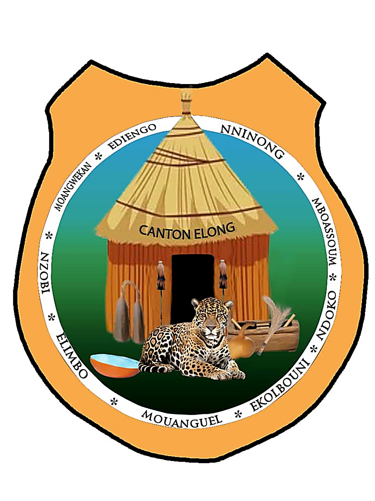
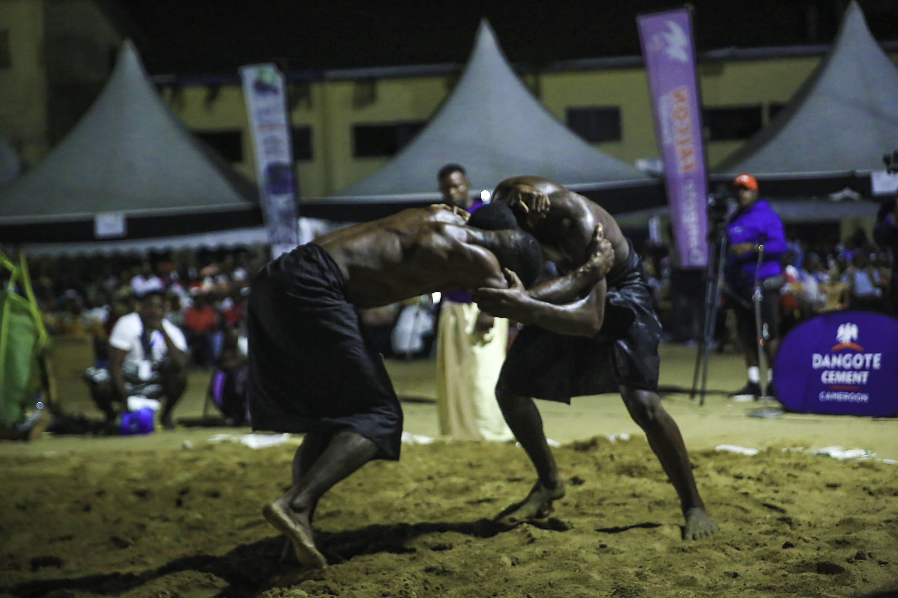

Aux origines du canton
Érigé en chefferie supérieure du 2e degré par l'Arrêté n°16 du 19 janvier 1982, le Canton Élong appartient au grand groupe Sawa, plus précisément au sous-groupe Bakundu et au clan Mbo. Situé dans l'arrondissement de Mélong (qui lui doit son nom), département du Moungo, il tire son nom d'Élong — l'un des treize fils de Ngo, dit « Elung Ngoeh ». Partis du Congo lors des grandes migrations bantoues entre la fin du 16e et le début du 17e siècle, ses ancêtres atteignirent le golfe de Guinée puis, laissant leurs cousins Duala dans l'estuaire, poursuivirent leur route jusqu'au pied du Mont Cameroun avant de se disperser sous l'effet des éruptions volcaniques.
Le canton, mitoyen du Canton Mbo dont il partage l'ascendance commune, a pour siège le village de Mouanguel et compte neuf villages : Nninong, Mboassoum, Ndoko, Ekolbouni, Mouanguel, Elimbo, Nzobi, Moangwekan et Ediengo — comme en atteste son blason officiel. Son Chef Supérieur actuel, Sa Majesté Éhodé Mbébi Michel, conduit une communauté résiliente d'environ 3 000 âmes, historiquement tournée vers la chasse et la cueillette, aujourd'hui attachée à la culture du café robusta sur les terres volcaniques fertiles du Mont Manengouba. Récemment intégré au Ngondo conformément aux statuts de l'institution, le peuple Élong y a trouvé un espace d'appartenance à la grande fraternité Sawa — une région par ailleurs riche en sites touristiques, des lacs Manengouba aux chutes d'Ekom.
🌿 Tradition Sawa
Le Chef Supérieur
Le Ngondo en images

